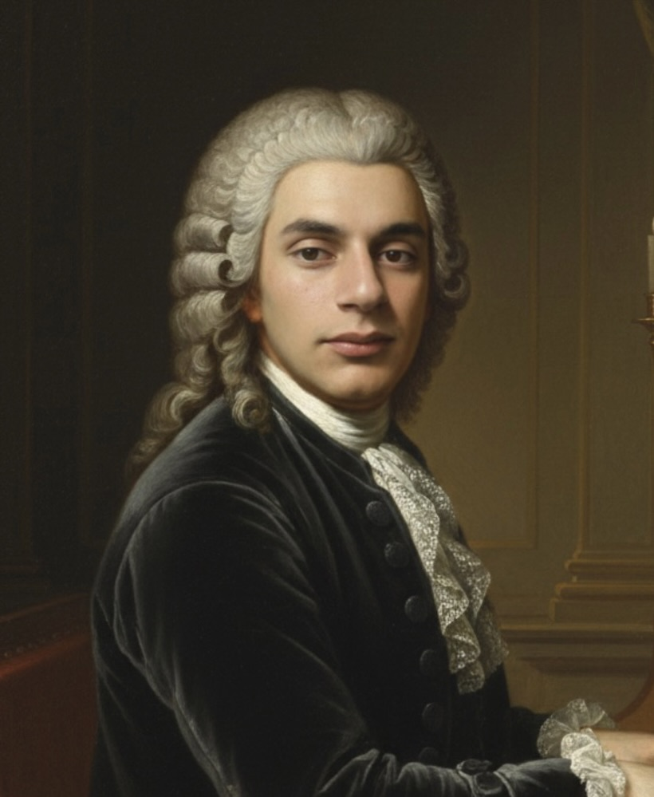
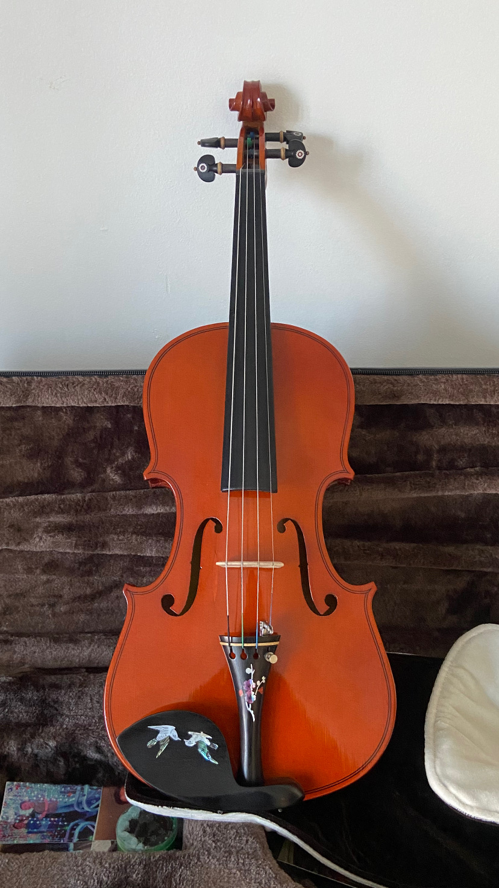

El Método Suzuki
A través de esta filosofía he construido una base técnica en el instrumento, y tambien aprendí que la paciencia y la repetición consciente son la clave para resolver cualquier problema complejo.
Estudiante de Ingeniería en Informática de FIUBA y violinista en proceso.
Me muevo principalmente entre el desarrollo de software y la línea de comandos. Mis herramientas de todos los días incluyen Python, C y scripts de Bash/Zsh en entornos Linux y macOS.
Plataforma web para la administración y control de un curso universitario.
Ver ProyectoResolución de problemas de la facultad y optimización de código.
Aplicación web que utiliza eventos de ratón y cálculos de coordenadas en tiempo real para crear una interfaz dinámica y... escurridiza.
Este espacio está reservado. Aquí iré anexando y documentando mis próximos proyectos a medida que los vaya terminando.
La programación no es lo único que requiere horas de práctica. Llevo tiempo estudiando el método Suzuki clásico.

A través de esta filosofía he construido una base técnica en el instrumento, y tambien aprendí que la paciencia y la repetición consciente son la clave para resolver cualquier problema complejo.
Aprender a tocar el violín ha sido una lección constante de perseverancia y además he tenido la oportunidad de compartir lo aprendido a estudiantes de nivel inicial lo cual me ha ayudado a desarrollar mis habilidades para guiar a enseñas a las personas con empatía y rigor.

Más que una herramienta, es mi principal medio de expresión, mi violín es mi compañero diario de estudio y frustraciones superadas.
¿Tienes alguna idea en mente, un proyecto, o simplemente quieres charlar sobre código o música? ¡Contactame!
gjoel6055@gmail.com